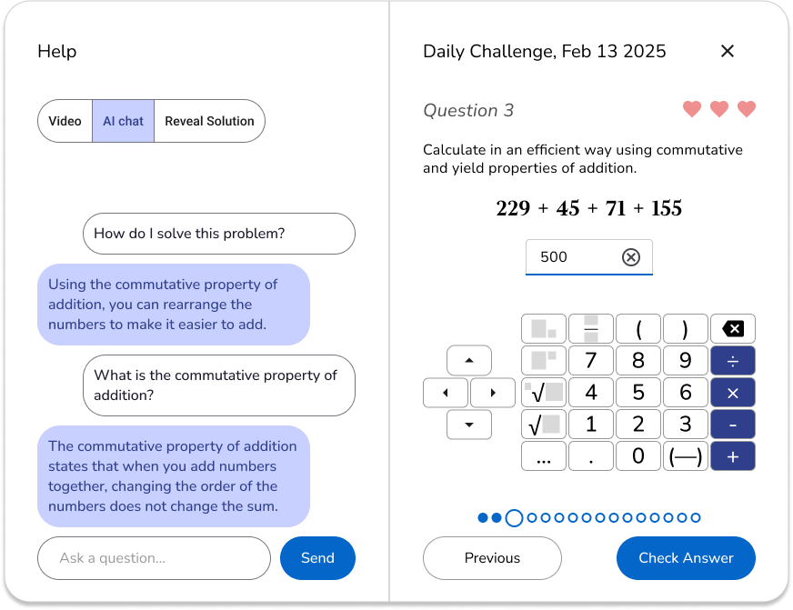

Al Jabr
Volunteer work for a startup
Spring 2025
Problem and Solution
- Problem: K-11 Students in Uzbekistan learn math online via Qalan, an online platform which suffers from several issues: a non-kid friendly design, unresponsive layouts, glitches, and confusing architecture.
- Solution: Al Jabr, an alternative online learning platform with colorful, inviting kid-friendly design, intuitive architecture, and corrections to technical issues.
Description
Volunteering for a small startup, I led a design team in using Figma to design Al Jabr, an alternative math education platform to Qalan. My work included:
Documentation
- Translating the project leads’ documentation into a sitemap
- Collaborating with developers to write exact documentation about the details of every page and how features would work
- UX writing: refining the terminology of features and page names to improve clarity and user friendliness
- Writing survey questions for Qalan users to better understand how they use Qalan
Design
- Creating plans for new information architecture and layouts
- Using the Material 3 Design Kit as a base for the design
- Designing pages for browsing topics, diagnostics tests, daily challenges, and more
- Designing an onscreen keyboard interface for inputting answers to math problems
- Designing a problem interface for viewing and answering math problems, including a help section for viewing a video lecture, an AI chat window, and a section for viewing the solution
- Building a consistent design system for fonts, colors, buttons, and other elements
Leadership
- Leading discussions in remote video calls
- Delegating tasks among design team members
Skills Demonstrated
Technical skills
- Figma
- Technical writing
Soft skills
- UI/UX design, interaction design, design system development, information architecture, UX writing, attention to detail
- Collaboration between developers and designers
- User research
- Team leadership, task delegation
Sitemap
Much of my work was translating the preexisting documentation into a visual sitemap in Figjam to communicate and clarify ideas between the designers and developers.
Creating the sitemap helped us identify gaps in the website's overall plan and figure out the next steps.
Final Designs
This is a sample of some of the designs we completed in Figma.